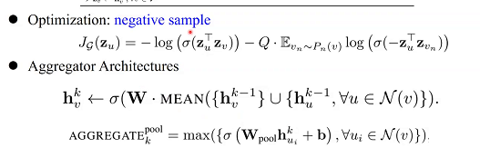
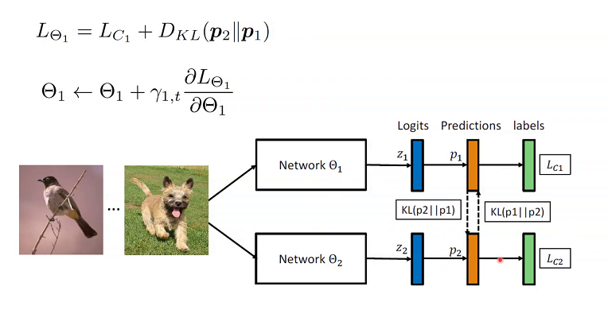

每日的周报汇总
Table of Contents
- 1. time series similarity measures
- 2. self-similarity ICML2019
- 3. sketch 与基因序列挖掘 贾鹏
- 4. SlidingSketch 李润东
- 5. 异常检测 Anomaly Detection 兰林
- 6. unsupervised multi-aspect network embedding xunuo
- 7. 逻辑 in Recommandation
- 8. 知识图谱在表示学习中的应用 张远鸣
- 9. Data Series Progresssive similarity search孙飞扬
- 10. 图神经网络在知识图谱中的应用
- 11. 马尔可夫逻辑网络
- 12. [没讲]大规模分类场景下的数据挖掘 梁子
- 13. 基于生物启发的局部敏感哈希 李润东学长
- 14. 知识蒸馏 雷润泽
- 15. online learning 梁子
- 16. 多跳下的开放域问答 ICLR2020 CMU+GOOGLE 张远鸣
- 17. adversarial Attack in Graph data.
1 time series similarity measures
1.1 metric
1.1.1 euclidean distance
lve. 不好使.
1.1.2 DTW (Dynamic Time Warping)
为了弥补相位差等别的一些原因，通过一定的warp方式进行soft，也就是， 建立两个时间序列的一个矩阵，即计算该矩阵中每个相位移动下的欧式距离,从而找到一条"最短通路",而后,在这种最短通路下进行欧氏距离的聚合.当然,这种方法的计算复杂度是特别高的.
UCR Suite
1.2 search method
1.2.1 UCR Suite
phw:使用神经网络去进行时间序列的相似度计算，这种思路是否可行呢？
sfy：时间序列的相似度度量更加看重于效率。使用神经网络也可以。
phw：传统的排序算法（数据结构里面的一些算法），也使用神经网络进行处理，变化成可微分的一种操作。这样的原因是：排序等基本计算是整个大系统的一个小部分，对于端到端的训练具有很大的意义，因此具有用神经网络替代传统的方式的意义。如果神经网络需要一个对“时间序列相似度”的处理，而对于一个端到端的系统中的这样一个子环节，其可微分是具有一定意义的。从这个角度来看，能否开展“时间序列相似度度量”的神经网络化。
jzz：听不太清。
sfy：只考虑时间序列，没有考虑“语音识别”这种特殊的语境。
1.2.2 SSH 近似序列搜索
{kind=link}
- sketching：实数-》+1，-1序列
- shingle：-1，1序列片段-》集合
- hash：集合与集合，使用LSH方法计算其相似度
zym:为什么要用1.与2.变换成集合,而不是直接对时间序列进行(量化等)处理之后直接LSH呢?
sfy:也有这种思路,但是没有这么做的.

我的想法:不能,因为如果直接映射,那么就丢失了时间序列最重要的序列信息.但是上图这种将一段系列变成一块,或许是可行的?
针对SSH对超参数敏感的问题:
1.2.3 clustering subsequences
没有特别听明白,天呢.

1.2.4 一点点疑问
究竟啥是random walk啊! shapelet究竟是什么东西?
1.2.5 Use Matrix Profile
对序列切割成若干个子序列,然后计算子序列之间彼此的欧氏距离
1.2.6 progressive similarity search
1.2.7 对带高频噪声的时间序列的处理
小波变换→ 指纹→ 计算
2 self-similarity ICML2019
如何为SGD挑选合适的数据点,使得模型尽快收敛.
2.1 COO Arrangement

3 sketch 与基因序列挖掘 贾鹏
3.1 GATK(Genome Analysis Toolkit)
数据->云端计算->结果传输回来.
3.2 application
3.2.1 记忆组装
把破碎且内部内容重复的序列进行拼接
3.2.2 序列相似度比对
通过计算序列的相似度,来探测
层次聚类:(Hiearchical Cluster)
Genome resembalance
加权性质的内积"准相似度",需要考虑某个元素的频率.
3.2.3 找到一个序列在哪个数据库中Genome Containment
主要是基于Bloom Filter进行
3.3 寻找新的问题
数据库中数据存在很多噪声,也就是噪声的问题.
4 SlidingSketch 李润东
4.1 problem
流数据比较重视最近的item. 通过设计一种新的数据结构来实现这个效果.
最近的算法无法很好的解决这种问题.
三种query:
4.2 基本概念
4.2.1 流数据
序列.
4.2.2 sliding windows(time-based)
以时间为计算
4.2.3 sliding windows(count-based)
以个数进行计算
4.2.4 membership query
在流数据中是否存在这个查询
4.2.5 Frequency query
在流数据中这个查询的频率
4.2.6 Heavy Hitter query
这个查询是否超过了某一个频率
4.3 method
4.3.1 对目前已有之动作的总结
所有的hash方式本质上都可以表示成下面所示的hash过程
比如:
- Bloom filter
- Count min
4.3.2 our method
- 一个bucket包括两部分,old与new
- update 每进入一个item,都进行hash,然后再被hash的地方进行数值的更新
- scan 对所有hash得到的序列进行轮询,对每个轮询到的点:遗忘掉old里的东西,然后将new中的东西放进old里面.
- query 相加,或者其他的一些东西
4.4 proof
5 异常检测 Anomaly Detection 兰林
5.1 什么是异常检测?
数据中会存在一些点,这些点偏离了这大部分数据.
应用:
- 入侵检测 Intrusion Detection
- Fraud Detection 欺诈检测
- 医疗诊断 Medical Diagnosis
- Data Stream Monitoring
- Security and Video Surveillance
数据特点:
- sample independent
- Spatial Dependency
- Temporal Dependency
- Graph Dependency
5.2 challenge
- 无法采用有监督学习方法.
- 很少标注异常数据
- 自然界本身异常数据就少
- 需要去学习正常数据的一些模式(而这些数据的维度通常非常高)
- 对异常的定义是非常主观的,会随着应用和目标的变化而变化.
- 正常数据和异常数据的差距同样不是十分明确.
5.3 traditional Algorithm
5.3.1 general Formulation
整体如下图所示:
5.3.2 classificaiton
5.3.3 Distance_Based metric
5.3.4 Statistical Models
直接放图
5.4 Deep Learning for Anomaly Detection
5.4.1 Deep One-class Models (Deep OC) -> Deep SVDD
2017 ICML
为什么能够发在这个论文上?
- 论文分析比较多;
2.对神经网络的优化比较细致.
SVDD的思路是通过一个超球面将所有的正常点连接起来
Deep SVDD则是通过损失函数更好地产生一个超球面.产生的方法就是,产生一个最小的超球,同时包含所有的正常的点.
5.4.2 AutoEncoder
无监督.
使用正常数据对数据编码器进行训练,之后输入一个数据,并计算输入和输出之间的距离.
如果距离足够小,则认为其是正常数据点,否则就是异常点.
问题:容易过拟合.
解决方案: 加入噪声.
It is potential to build the regularizer with logic rules. (将逻辑规则表达成损失函数的一部分)
5.4.3 变分自动编码器 Variational AE
变分自动编码器的的隐函数(即隐向量)与传统的自动编码器不同.
变分自动编码器的隐向量满足一个分布(比如标准正态分布),减少了数据的过拟合.
变分自动编码器的分布是事先定义好的,而GAN的分布是根据数据学习的.
5.4.4 GAN
优势,可以学习到数据的分布,而非像VAE那样直接使用到数据的分布.
5.4.5 Semi-Supervised Deep SVDD
5.5 总结.
5.6 讨论
logic rules in NN ?
6 unsupervised multi-aspect network embedding xunuo
6.1 network
6.1.1 network mining
- link prediction
- link rank
- community detection
- classificaiton
6.1.2 representation of networks
- adj matrix
问题：表示稀疏，维度较高，占用内存过大.
- goal
- 低维
- dense and semantic
6.2 network embedding
6.2.1 classical
Laplacian Eigenmap
6.2.2 graph factorization
6.2.3 Neural word embedding
6.3 Neural word embedding
6.3.1 deep walk
hiearchical softmax
6.3.2 graphSAGE
采样,聚合,更新,预测.
当无监督时: 通过"让邻域内的节点相似度大于邻域之外的"构建出损失函数.

6.4 multi-aspect network embedding
6.4.1 poly Deep Walk
aspect的数量是一个给定的,但是每个aspect每个被采样的节点的概率是一个先验(即独立于数据而自己存在.)
6.4.2 asp2vec deep walk based
7 逻辑 in Recommandation
7.1 collaborative Filtering
- 查看 user 与 item 的相似度问题
- 添加上下文信息的协同滤波
问题：基于相似度匹配的协同滤波不如基于逻辑规则好用。
7.2 逻辑规则
7.3 使用NN演示逻辑关系
8 知识图谱在表示学习中的应用 张远鸣
8.1 应用
- 搜索引擎
- 智能问答
8.2 知识图谱中实体的表示
- one-hot向量
- 稠密向量
类似于NLP中对词向量的表示，知识图谱由离散符号变成了对连续向量的操作。
8.3 知识图谱表示学习的目标
8.3.1 在知识图谱中进行间接预测
8.3.2 基于游走路径的知识图谱
8.3.3 基于图卷积的知识图谱
将同构图转变为异构图
9 Data Series Progresssive similarity search孙飞扬
完了，没听懂。完了完了。
10 图神经网络在知识图谱中的应用
11 马尔可夫逻辑网络
12 [没讲]大规模分类场景下的数据挖掘 梁子
12.1 论文阅读
12.1.1 Multilabel Classification by Hiearchical Partitioning and Data-dependent Grouping
- abstract
要解决的问题：multilabel classification -> 每一个数据都对应于一个较大的类别集合中的若干个集合，也就是说，要将数据映射为一个非常稀疏的二进制标签向量上。（data instance belongs to a small number of classes from a large set of classes. involve learning very sparse binary label vectors.）
基于问题的这些特性进行解决：
- sparsity of label vectors.
- hiearchical structure of classes.
尝试要去干的事： embed them in low dimensional space using label groupings. 为了导出结果，需要把低维度的嵌入式label embedding还原为0-1的sparse vector. 方法是：obtain labels in the original space using an appropriately defined lifting.
具体思路：
- We first present a novel data-dependent grouping approach, where we use a group construction based on a low-rank Nonnegative Matrix Factorization (NMF) of the label matrix of training instances.
使用非导航的矩阵银子分解得到一个grouping
- We then present a hierarchical partitioning approach that exploits the label hierarchy in large-scale problems to divide up the large label space and create smaller sub-problems, which can then be solved independently via the grouping approach.
使用层次划分将一个大的标签空间切割为若干个小的标签空间.
计算复杂度: 降低到了logarithmic runtime
- introduction
应用: recommandation system, bioinformatics, CV, NLP, music.
- related works (目前解决这一问题的一些工作)
一共有四种方法,分别是:
- One versus All classifiers.
基本思路:为每一个label都设置一个0-1分类器来确定某个数据是否属于这一类. 优点:预测精度比较高. 缺点:训练和运行的时间成本过高. 妥协的方法: 对于每一个label,采用正样本+指数复杂度下的负样本采样训练. -> 类比于 softmax中当输出类过多时的解决思路.
- tree based classifiers.
优点: 当label存在一种自然上的层次结构时,使用这种方法效果很好. 缺点:需要采用一些聚类方法对标签进行划分,这会增加算法的训练时间成本;对于树结构的每一个叶子节点(也就是层次的每一个分支)都需要训练一个分类器.
- deep learning based classifiers
优点:效果好. 缺点: 神经网络模型的规模过大(GB), 训练和使用的时间成本较高.
- embedding based classifiers
想法: 将稀疏的标签向量映射到稠密的低维度空间. 基于的假设:如果说label的向量构成的矩阵整体是low rank的,那么我们就可以用label之间的相关度correclation 来度量误差. 但是上述假设并不是时时刻刻成立.一些常见的解决办法是: local embedding, negative sampling. 相关的一些缺点: 在 recover the high-dimensional vectors, involving eigen-decompositions, matrix inversions, large optimization problems. 一些为了解决这个问题所提出的方法: MLGT. 对于一个大的label集合,先随机生成m个subsets(这个subset被称作是group,本质上是一个向量,向量里有些地方是1,有些地方是0),之后,针对这m个group训练m个彼此独立的0-1分类器,这些分类器主要用来确定一个数据点是否从属于m个group中的某一个.当标签的稀疏度为k时,仅仅需要O(k^2logd)复杂度的group就可以实现不错的分类效果.并且这种方法被证实具有很小的hamming loss. 当然,随机生成group并不是一个好的选择.
- One versus All classifiers.
- contribution
- ourmethod
12.1.2 Bonsai(盆景) - Diverse(多样化) and Shallow Trees for Extreme Multi-label Classification
- abstract
定义问题:和前面相似,被称作extreme multi-label classification.
基本工作: Bonsai, which generalizes the notion of label representation in XMC, and partitions the labels in the representation space to learn shallow trees.
在label representation的生成上,可以依据于:1)input features, 2)label vectors, their co-occurrence with other labels;3)joint space.
效果:精度高,训练快.
- introduction
和上面类似,重点强调了数据的后尾效应(也叫幂律效应). a large fraction of labels are tail labels. those which have very few training instances that belong to them (also referred to as power-law, fat-tailed distribution and Zipf’s law).
幂律效应一般可以表达为:
- related works
与前面不一样的是,添加了一些额外的项
- one vs rest
同 OneVSAll.
- label embedding
这种方法在10~100数量级的标签上使用效果很好,但是当标签的数量进一步增加,误差就会变大.
原因: 低秩的假设不再可行.
- 基于深度学习的方法
However, their performance still remains sub-optimal compared to the methods discussed above which are based on bag-of-words feature representations. This is mainly due to the data scarcity in tail-labels which is substantially below the sample complexity required for deep learning methods to reach their peak performance.
- one vs rest
12.1.3 Fast Training for Large-Scale One-versus-All Linear Classifiers using Tree-Structured Initialization
13 基于生物启发的局部敏感哈希 李润东学长
数据量大，查询慢
13.1 基于果蝇的hash
从短小紧凑的sketch映射为又长又稀疏的sketch
13.2 flyhash
将随机映射矩阵转化为稀疏的映射矩阵
14 知识蒸馏 雷润泽
fitnet
14.1 fitNet
14.2 attention map learning
亮点在于反向传播中新加的一项，那一项是对数据求偏导（而非过去对模型参数求偏导），从而测试模型对输入数据变化的灵敏性。
14.3 rocket launching
student model 分享teacher的特征提取部分，而把分类部分自己构造，然后再使用三个损失进行反向传播训练特征提取部分，两个损失函数进行反向传播训练分类环节。
14.4 FSP Matrix
通过对同一神经网络上不同层的特征之间的联系进行固定，让Teacher与Student之间的上述联系相同。 如下图中的损失函数所示。
14.5 instance Relationship Graph
对输入的batch data构建一张图，其中节点是数据样本（如图片），边是样本与样本之间的关系。希望教师和学生对数据之间关系的判断相同。
14.6 在线蒸馏 Deep Mutual Learning
两个网络互相学习。

多个同构的网络集成作为整体作为教师网络，然后用结果教授每一个网络。
14.7 self distillation
自己指导自己。
使用深层网络的特征作为一个监督信号去指导浅层网络的学习。
通过这种方法，可以使用前N块神经网络来实现精度和压缩比率的trade off。
14.8 model quantization
将knowledge distillation与quantization相结合。
15 online learning 梁子
- 讲的太快
- 不清晰，含糊
- 调查太浅；
- 场景不清晰；
- 不够深入；
- 时间太短；（大报告至少一个小时）
赵老师： online incremental learning？
16 多跳下的开放域问答 ICLR2020 CMU+GOOGLE 张远鸣
16.1 知识图谱问答（KGQA）
知识图谱构建很麻烦。 知识图谱残缺则无法回答。
16.2 相关工作
16.3 本文贡献
实现一种类似于知识图谱的多跳推理。
工作流程：
- 预训练；
- 推理；
意图：
- 实体可以作为一种媒介，在多篇文档之间跳转；
- 不同文档中的相同实体（enity）具有不同的名字（mension）；
- 先找到enity的所有mension，然后再从这些mension里找到与问题相关的那些东西
- 提取未出现的实体为潜在实体？
共值消解： 将相同实体的不同名称的表达统一。
 相关函数用来过滤相关的话题
相关函数用来过滤相关的话题
原有：从问题中，一步步搜索，最终找到答案； 改进： 从用户的问题上抽取所有实体，然后针对文本表进行查询，然后生成一个新的问题。然后循环，一步步得到答案。
张朔学长：问句中的两个实体是“与”的关系，但是没有任何地方体现。可以加入这种对逻辑关系的判定的部分去改进。 方向：（问题分解）
17 adversarial Attack in Graph data.
17.1 motivation
In graph data, some node can 逃避 anomaly detection with add or delete some edges.
17.2 challenge
- 图一般可以表示为一个邻接矩阵的形式，本质上可以表示为一个离散的空间向量。这不适合于神经网络的使用。
- 如何去定义“不易察觉的变化”-》针对图数据；
- 怎么样干吗干吗干吗；
- 可拓展性非常大，究竟在什么尺度上去考虑这个问题
17.3 attack strategy
17.4 attack stage
17.5 assumption of attackers
17.5.1 观察者对模型的了解程度
17.5.2 观察者对数据集的了解程度

17.6 application
关于图神经网络的各种任务。
17.7 some papers
17.7.1 node classification KDD2018
17.7.2 ICML 2018
17.7.3 community detection arxiv 2019
17.8 future